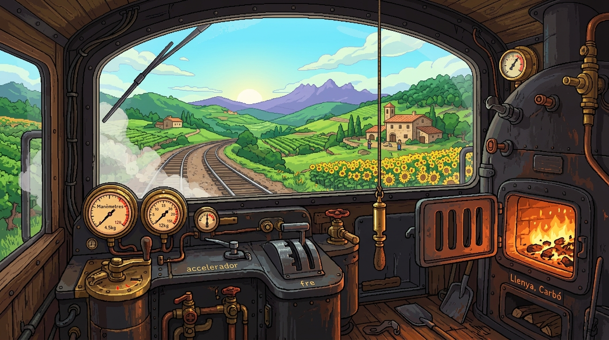
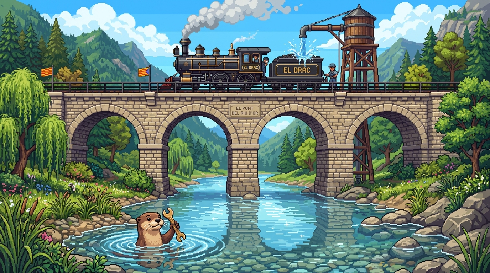
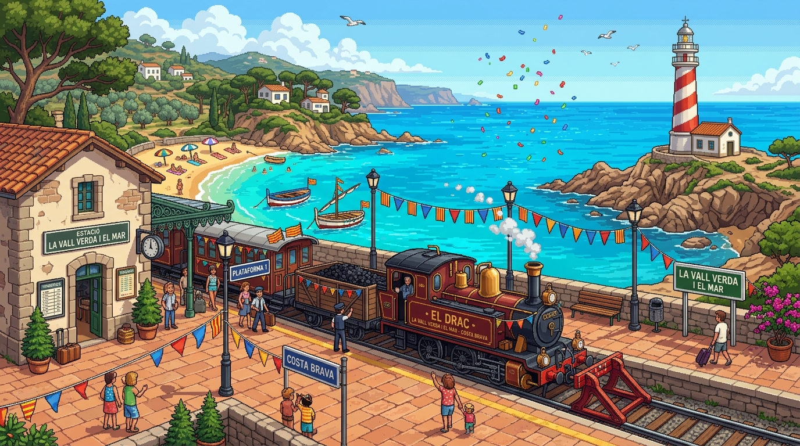
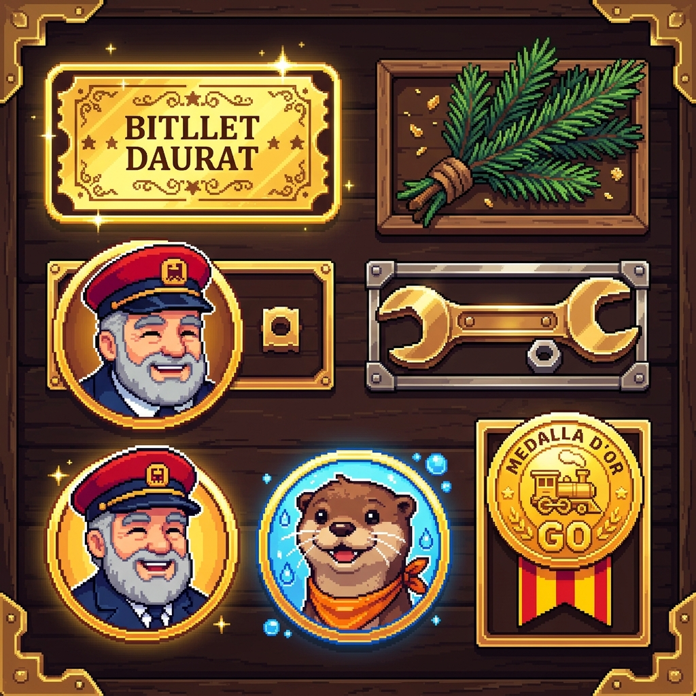

🚂
Carregant El Conductor de Paraules...
Preparant les vies i el xiulet...Carregant El Conductor de Paraules...
Preparant les vies i el xiulet...Has obert el fitxer directament des de la carpeta?
▶️ Obre el joc autònom (sense servidor)Aquest joc està dissenyat per a infants a partir de 5 anys que viuen fora de Catalunya per apropar-los a la llengua catalana mitjançant la mecànica dels trens clàssics.
MIRA Observa i escolta el nom dels objectes i personatges.
AGAFA Recull elements (ex: branques) per posar-los a la maleta.
PARLA Parla amb el Cap d'Estació! Activa el micròfon per dir la paraula màgica ("Obre la via").
CONDUEIX Puja a la cabina del tren per tocar el xiulet, alimentar el foc i accelerar cap a la següent estació!
El joc utilitza la veu en català (ca-ES). Si el micròfon no està disponible o l'infant té vergonya, hi ha un botó tàctil "🗣️ Toca per dir-ho!" que pronuncia la frase i permet avançar sense frustració.
Il·lustracions d'alta definició inspirades en l'estil pixel art modern (Eastward / Sea of Stars) ambientades a Catalunya.




